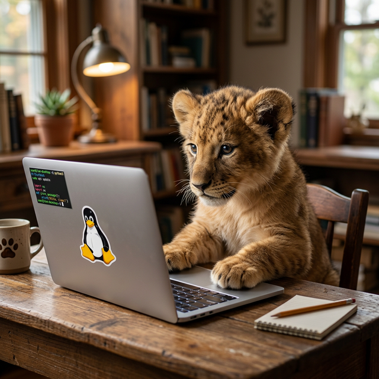
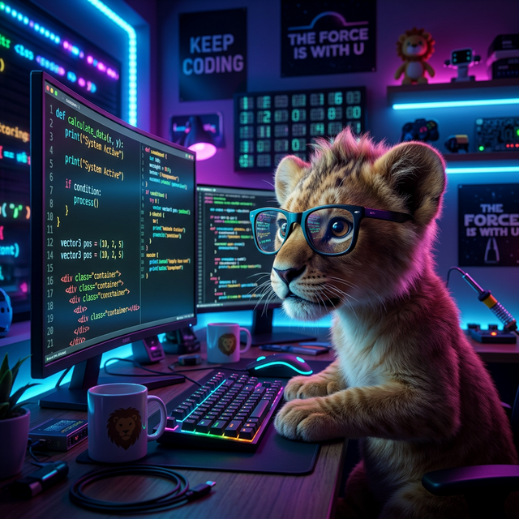
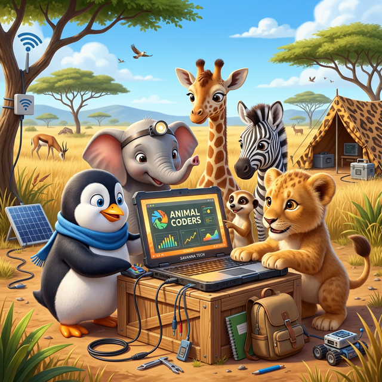

O Futuro é
Selvagem.
Imagine a força da natureza combinada com a liberdade do código aberto. Um pequeno rei da selva, dominando o mundo através do terminal Linux.
Imagine a força da natureza combinada com a liberdade do código aberto. Um pequeno rei da selva, dominando o mundo através do terminal Linux.

Por que o Lion Cub Linux é a escolha suprema para desenvolvedores
Otimizado para hardware moderno com um kernel customizado para máxima performance e baixa latência.
Proteção robusta e isolamento de processos, mantendo seus dados tão seguros quanto uma toca de leão.
Totalmente customizável e transparente. Se você pode imaginar, você pode construir no Lion Cub Linux.
Veja como é o dia a dia na nossa savana tecnológica

